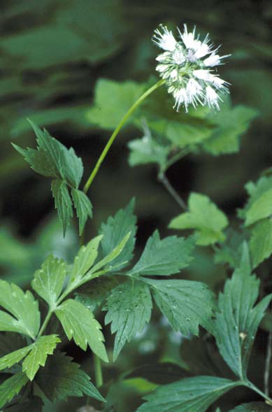

Hydrophyllum Virginianum
Family: Hydrophyllaceae
Virginia Waterleaf
Swink/Wilhelm #5
Click to view larger photo
FLOWERING: May - June
SEED TIMING: July
HABITAT: Woodland
DIAGNOSTIC FEATURES: 1 to 2 feet high. Pale green, deeply-lobed, toothed, variegated (looks like water spots) leaflets. Pale lavender flower clusters with protruding stamens.
TO PICK: Seed capsule spherical - 1/6 inch in diameter. Turns tan when ripe.